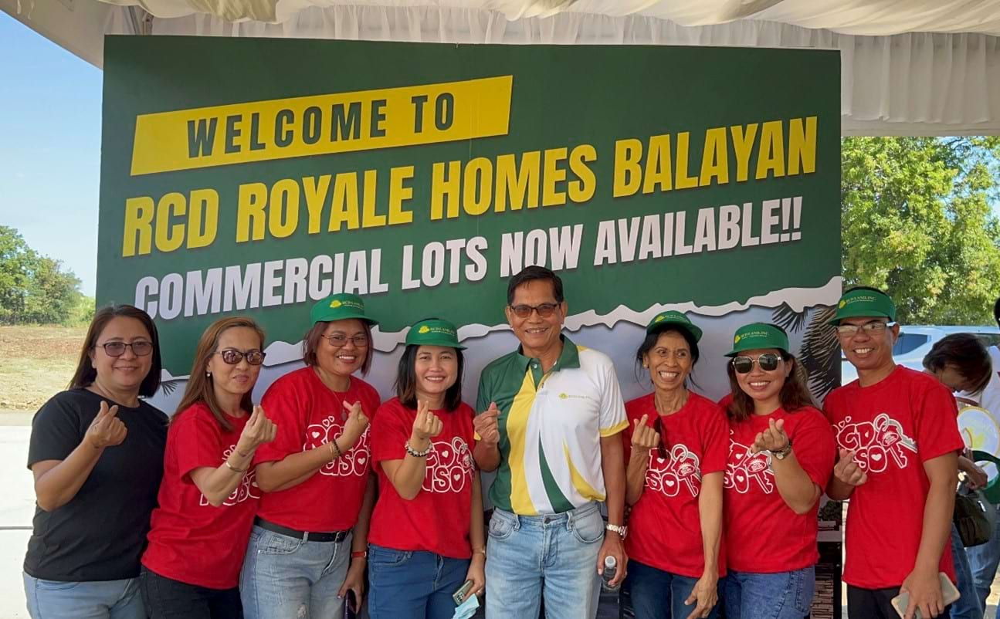
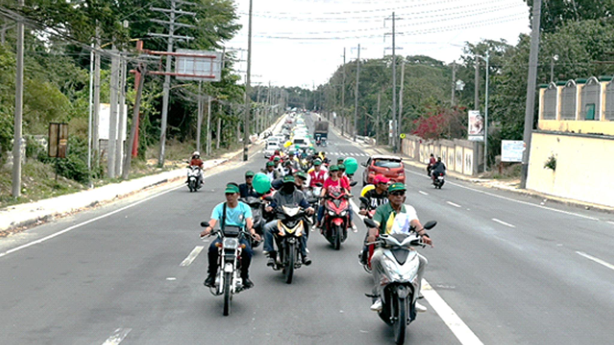
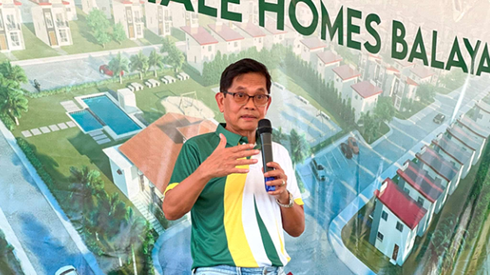
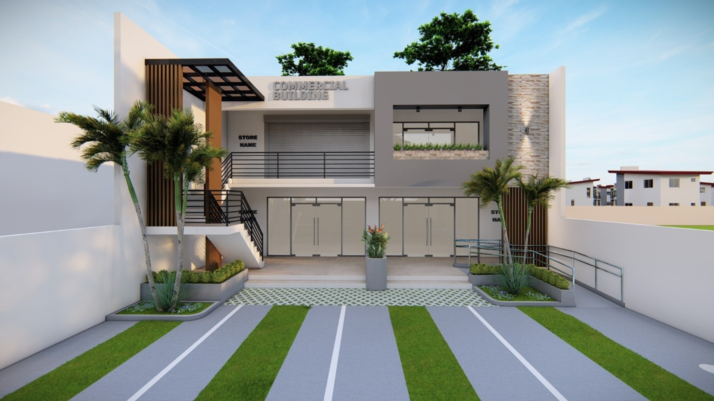

<section class="mt-[81px] py-20 bg-[#f7f7f7]">
    <div class="max-w-7xl mx-auto px-4">

        <!-- Section Header -->
        <div class="mb-12">
            <div class="max-w-5xl mx-auto flex items-start space-x-4">
                <div class="w-1 h-40 bg-green-500"></div>
                <div>
                    <h2 class="text-4xl font-bold text-gray-800">Unveiling Business Success: The Grand Launching of
                        Commercial Lots in RCD Royale Homes Balayan
                    </h2>
                    <p class="text-gray-600 text-base mt-1 max-w-2xl">
                        Last February 18, 2024, RCD Land unveiled another significant addition to its community by
                        launching Commercial Lots in RCD Royale Homes Balayan.
                    </p>
                </div>
            </div>
        </div>

        <!-- Centered Photo -->
        <div class="flex justify-center my-12">
            
        </div>

        <!-- Author/Meta Info -->
        <div class="flex justify-center mb-8">
            <span class="text-sm text-gray-700">
                <span class="font-semibold">Author:</span> Nicole Dizon&nbsp;&nbsp;
                <span class="font-semibold">Category:</span> The Grand Launching&nbsp;&nbsp;
                <span class="font-semibold">Date:</span> <span>February 18, 2024</span>
            </span>
        </div>

        <!-- Article Content -->
        <div class="max-w-3xl mx-auto text-gray-700 text-sm leading-relaxed px-4">
            <p>
                Over three hundred individuals — from business partners to interested homebuyers and investors,
                participated in this event’s celebration. As Engr. Richard Cruz, RCD Land's Assistant Vice President of
                Permits & Business Development Department, stated in his opening remarks, “We are here today to
                celebrate the launching of our commercial lots, which is a great addition to the progressive development
                of Balayan Batangas. Given its strategic location along Balibago-Balayan Highway and its close proximity
                to commercial areas such as Supermarkets, Restaurants, Hospitals, Government Offices and upcoming Gov’t
                Infrastructure projects, RCD Royale Homes’ Commercial will definitely be a great investment for the
                business you are planning.”
            </p>

            <!-- Centered Photo -->
            <div class="flex justify-center my-12">
                
            </div>

            <p class="mt-6">
                In the photo: Sellers, Buyers, and VIPs at the Grand Launching Event
            </p>
            <p class="mt-6">
                One of the event highlights was the long motorcade participated by over 50 vehicles that draw attention
                along 9-km route from the project’s site to the Balayan town proper. RCD Sellers, partner brokers, and
                trusted agents has made this activity as their avenue to give out flyers and invite people to invest in
                the newly launched commercial lots.
            </p>

            <!-- Centered Photo -->
            <div class="flex justify-center my-12">
                
            </div>

            <p class="mt-6">
                In the photo: Motorcade to promote the launch of Commercial Lots in RCD Royale Homes
            </p>
            <h3 class="text-2xl font-semibold mt-8 mb-4">PROGRESSIVE ECONOMIC GROWTH OF BALAYAN, BATANGAS</h3>
            <p class="mt-6">
                More than the promise to improve the lives of Filipinos by providing quality and affordable homes, RCD
                Land also fosters a community that maximizes the business potential of the strategic location of its
                projects. Balayan is a fast-progressing municipality that continues to grow in population with its
                visionary developments, where economic prosperity, cultural richness, and sustainability converge.
                Hence, RCD Land aims to contribute to this success by bringing commercial spaces to aspiring business
                owners and eager investors to support the municipality's overall economic growth.
            </p>

            <p class="mt-6">
                Mr. Rolando Delantar, President and CEO of RCD Land stated that, “Balayan is considered the Rising Star
                of the province of Batangas. The continuous developments of the municipality make it one of the fastest
                growing municipalities. As Balayan, Batangas, prepares to welcome a new era of commercial development,
                the opportunities for investors and businesses are boundless. Hence, the best time to invest in
                commercial lots is now and RCD Land wants to fulfill its part in nation-building through creating this
                kind of investment and business opportunities to the Filipino people.”
            </p>

            <!-- Centered Photo -->
            <div class="flex justify-center my-12">
                
            </div>

            <p class="mt-6">
                In the photo: Roland Delantar, President and CEO of RCD Land
            </p>
            <p class="mt-6">
                The town of Balayan is considered a first-class municipality due to its progressive development. Among
                its upcoming projects is the Nasugbu-Bauan Expressway or NBEX, which connects the eastern and western
                parts of Batangas to cut travel time to and from the Metro. Following that, there is the SMC Sports
                Complex which takes part in the commitment to help develop homegrown athletes who can compete in local
                and international sports competitions, as well as promote health and wellness in the town and throughout
                the province of Batangas. There is also the Balayan Solar Power Project, a 480MW solar PV power project,
                set to commence this year. These are just great additions to the currently sought-after beaches in
                Batangas which is expected to bring more and more people and businesses in this province.
            </p>

            <h3 class="text-2xl font-semibold mt-8 mb-4">RCD ROYALE HOMES BALAYAN: COMMERCIAL LOTS AND RESIDENTIAL UNITS
            </h3>

            <p class="mt-6">
                RCD Royale Homes Balayan is an 80,141 sqm subdivision which will have a total of 509 saleable units— 298
                of which are single detached, 181 units will be townhouses, and 30 are commercial lots. The community is
                well-planned, complete with amenities such as a guarded entrance gate, a basketball court, a swimming
                pool, a clubhouse, and parks and playgrounds. .
            </p>
            <p class="mt-6">
                The Prime Commercial Lots, with a common lot area of 360 square meters, serve as an excellent investment
                for your business. Various design ideas for commercial buildings on these prime lots are available. The
                good news is that you can reserve your slot for only 50,000 pesos.
            </p>

            <!-- Centered Photo -->
            <div class="flex justify-center my-12">
                
            </div>

            <p class="mt-6">
                In the photo: Commercial Building Design Idea on Inner Lot of RCD Royale Homes Balayan
            </p>

            <p class="mt-6">
                Invest in your Success, Invest in RCD Royale Homes Balayan!
            </p>

            <p class="mt-6">
                For inquiries about RCD Royale Homes Balayan, you may visit us at our Facebook page at
                @RCDRoyaleHomesBalayan or contact us at (02) 617 5364 or 0917 700 1109.
            </p>